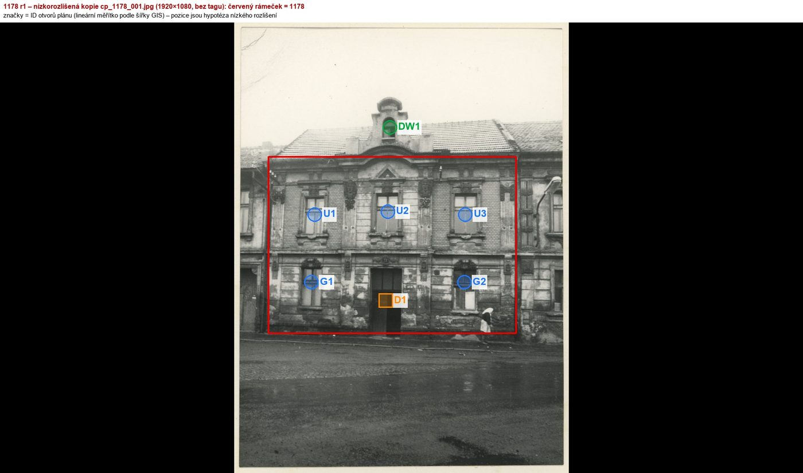
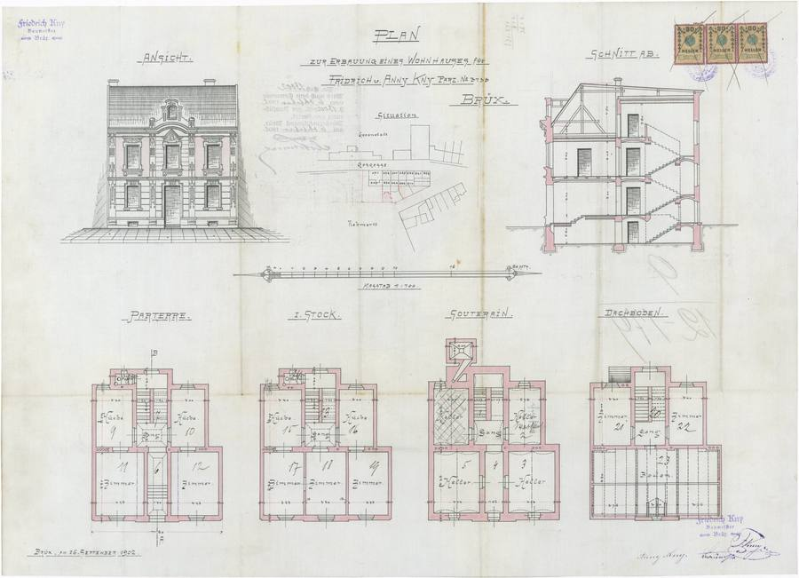
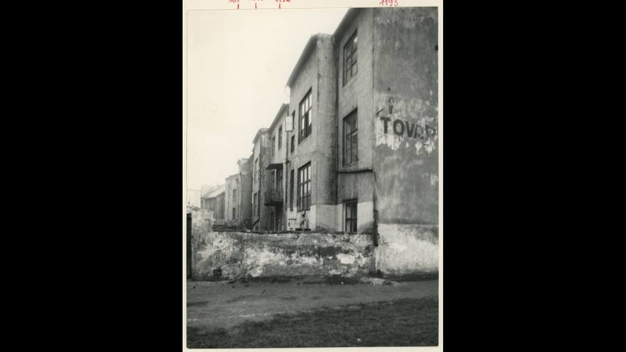
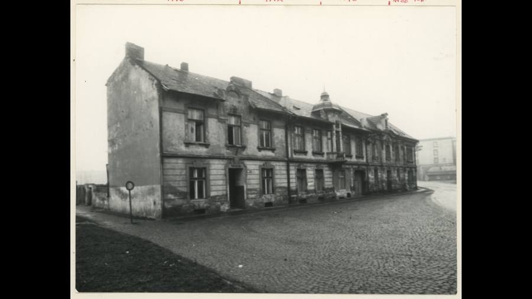
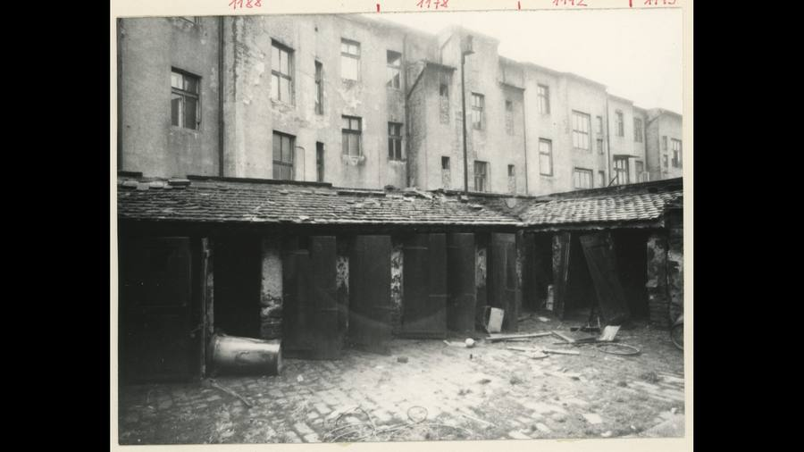
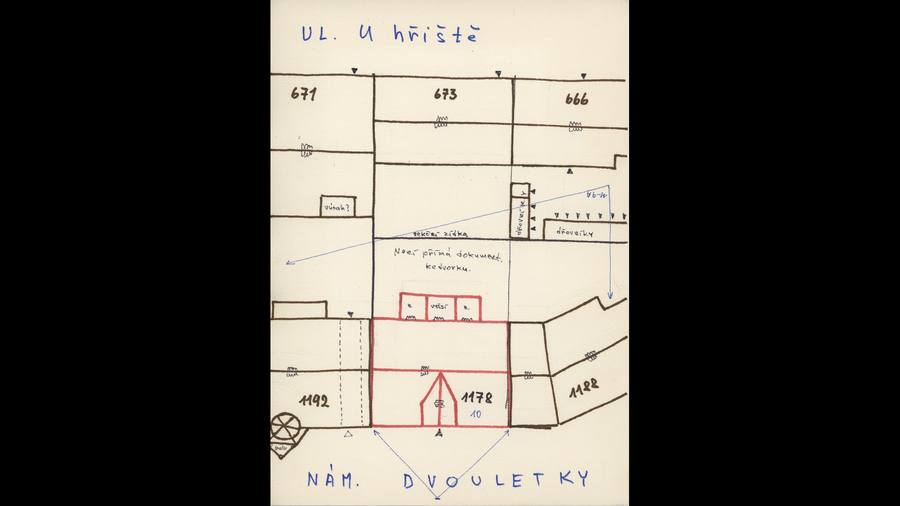
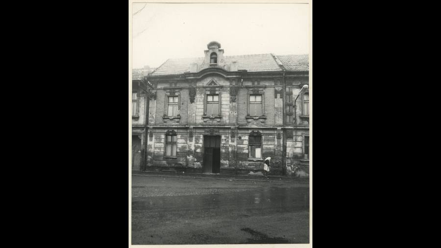
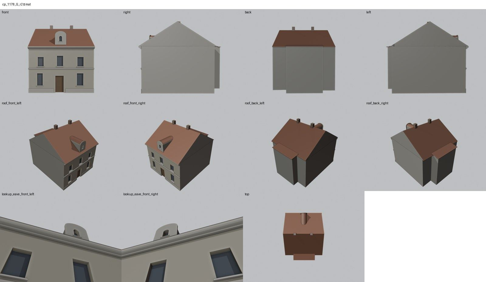
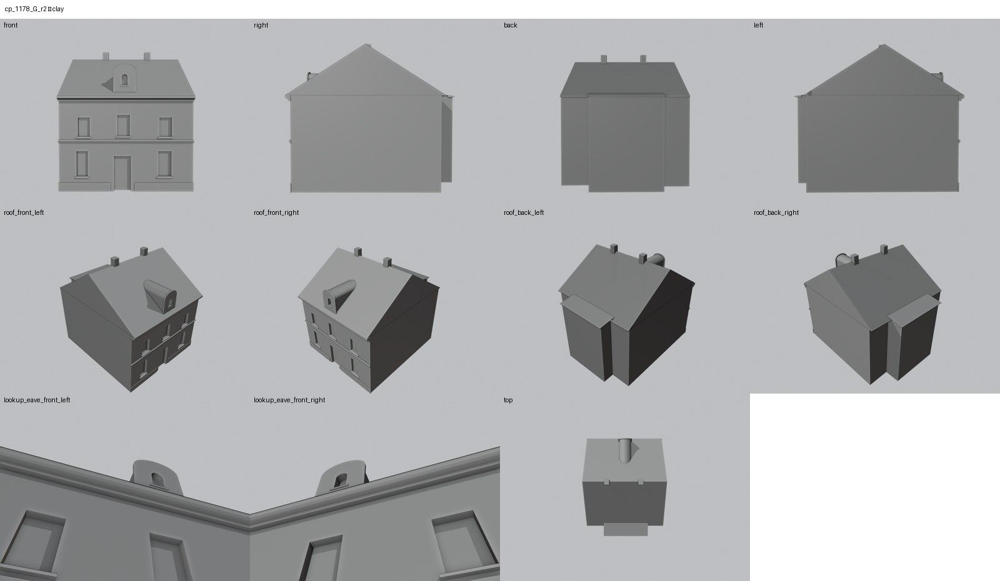
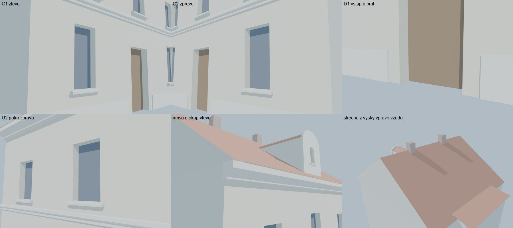

Identita domu
Upozornění – částečně hypotéza: Fasáda je doložena jen nízkorozlišenou kopií fotografie; výšky a detaily jsou odvozeny z plánu a sousedů.
Dům čelem k nám. Dvouletky mezi 1192 a 1188 (skica 1192 | 1178 | 1188, GIS budova 1129). Fasáda je doložena jen nízkorozlišenou kopií fotografie: tři osy, v přízemí okno, portál a okno, v patře tři okna (prostřední s trojúhelníkovým frontonem), atikový štít s obloukovým oknem.
Použité prameny: nízkorozlišená kopie fotografie cp_1178_001, skica cp_1178_001, pohled na řadu cp_1178,1188,1192,1193_002 (sousední oblast Náměstí Dvouletky), plán cp_1178_001, GIS půdorys 1129.
Kde je dům na fotografiích
Dům je na snímku v červeném rámečku, sousední domy jsou popsány čísly a každý otvor má ID, podle kterého se počty otvorů kontrolují proti modelu. Kliknutím otevřete větší obrázek.


Přílohy v databázi (6)
Všechny přílohy struktury 1178 v databázi Libuše, načtené živě 25. 10. 2026 (jen pro čtení) a otevřené. Kliknutím otevřete větší náhled.


plán / výkres
SHA-256 184d13f57e27…


kopie bez tagu (1920 × 1080)
SHA-256 ed0e03049848…


kopie bez tagu (1920 × 1080)
SHA-256 2a0b23de6fdc…


kopie bez tagu (1920 × 1080)
SHA-256 c72693c09c3b…


kopie bez tagu (1920 × 1080)
SHA-256 a85c367d0c12…


kopie bez tagu (1920 × 1080)
SHA-256 dd65f76eaa75…
Geometrie
| Revize geometrie | r2 |
|---|---|
| Úsek ulice | S6 · domy čelem k nám. Dvouletky |
| Poloha | GIS budova 1129, popisek 1178, ulice U hřiště (1938 Seligerova) |
| Šířka průčelí | 10,75 m |
| Výška okapu | 7,70 m (odhad) |
| Podlaží | 2 |
| Střecha podle pramenů | sedlová střecha, štíty k sousedům |
| Otvory / vikýře v modelu | 7 / 1 |
| Polygonů | 277 |
Kontrolní pohledy






Kontrola modelu
| Brána geometrie (automaticky) | v pořádku |
|---|---|
| Uzavřené podkroví (GLB) | v pořádku: zásahy paprsků 1, nekryté zdivo 0,00 m², střecha nad prázdnem 0,00 m² |
| UV mapování | v pořádku: 0 zkolabovaných ploch z 277 |
| Síť | v pořádku |
| Počty otvorů proti pramenu | souhlasí |
| Vizuální kontrola | prošla (Claude (Opus 5.5), 2026-10-25) |
| Kontrola střechy | prošla |
Textury
bez textur (částečně hypotéza – jen prosté materiály)
Až Codex dodá texturovaný model, objeví se v prohlížeči nahoře volba Textury (Codex).
Hypotézy
Upozornění – částečně hypotéza: Fasáda je doložena jen nízkorozlišenou kopií fotografie; výšky a detaily jsou odvozeny z plánu a sousedů.
Vše níže je model_hypothesis, provisional, locked: false.
- jen nízkorozlišená kopie fotografie (1920 × 1080, bez tagu): polohy a výšky otvorů jsou odhad z měřítka šířky GIS
- střecha je z kopie fotografie a z pohledu na řadu cp_1178,1188,1192,1193_002 (orientačně)
- štuk, bosáž a šambrány patří do textury
- dvorní průčelí je bez otvorů
- zadní rizalit z GIS je zastřešen pultovou střechou
Technický zápis hypotéz v plánu modelu (revize r2, bez diakritiky)
- jen nizkorozlisena kopie fotografie (1920x1080, bez tagu) - polohy a vysky otvoru odhad z meritka sirky GIS
- strecha z kopie fotografie a pohledu na radu cp_1178,1188,1192,1193_002 (orientacne)
- stuk, bosaz, sambrany = textura
- dvorni pruceli bez otvoru
Historie revizí modelu
- r1 25.10.2026: prvni stavba podle nizkorozlisene kopie fotografie
- r2 25.10.2026: zadni rizalit (GIS) zastresen pultovou strechou - r1 brana podkrovi FAIL
Soubory
- Geometrie čp. 1178, GLB (revize r2)
- Pracovní model: F:\MOST\output\u_hriste_street_claude_2026-10-25\houses\cp1178\r2\cp_1178_G_r2.blend
- Plán modelu: F:\MOST\output\u_hriste_street_claude_2026-10-25\houses\cp1178\geometry_plan.json